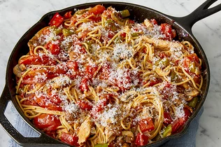

Pasta

What is pasta? Italian pasta (pronounced “PAS-tah”) is a collective name for a category of food made from wheat flour and water, sometimes with egg. The name refers to the resulting dough (pasta also means “dough”) that is rolled out and cut into various shapes. Pasta is cooked in water and served with a sauce.
Ingredients
- 1 (19 ounce) package Johnsonville® Mild Italian Sausage Links
- 1 (16 ounce) package linguine
- 3 tablespoons olive oil
- 1 small sweet onion, thinly sliced
- 1 teaspoon minced garlic
- 1 (14.5 ounce) can diced Italian tomatoes
- 1 (10.5 ounce) can chicken broth
- 2 cups broccoli florets
Steps
- Prepare sausage according to directions. Cool slightly; cut into 1/4-in. slices. Prepare pasta according to package directions.
- In a large saucepan, saute the onion and garlic in olive oil until tender. Stir in tomatoes and chicken broth. Bring to a simmer. Add the broccoli and cooked pasta. Cook until broccoli is tender, about 5 minutes. Add sausage; toss to combine.